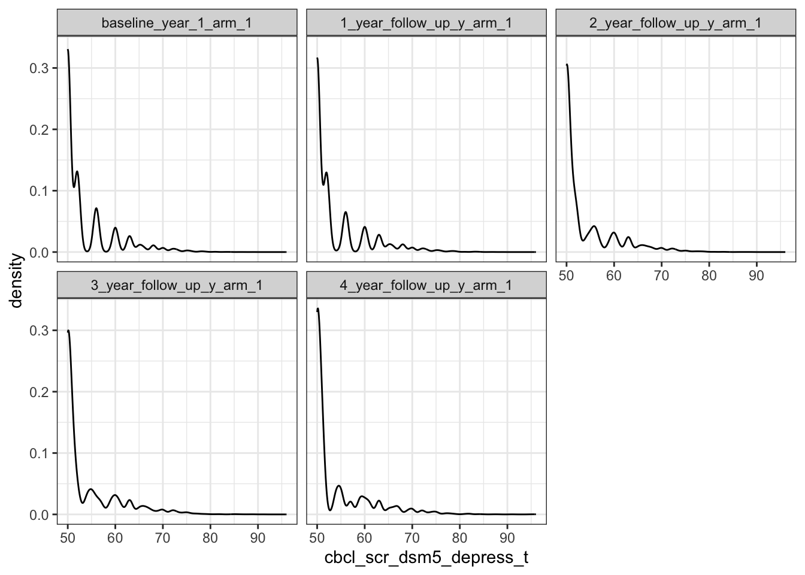
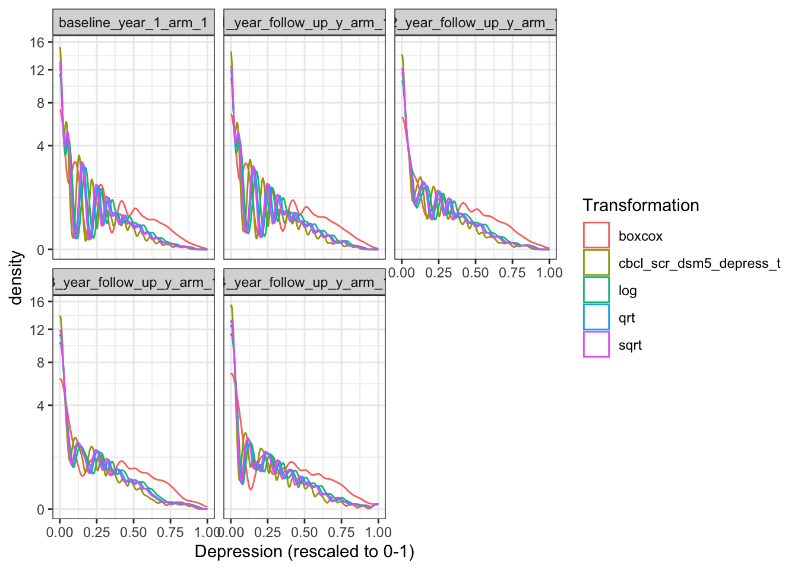
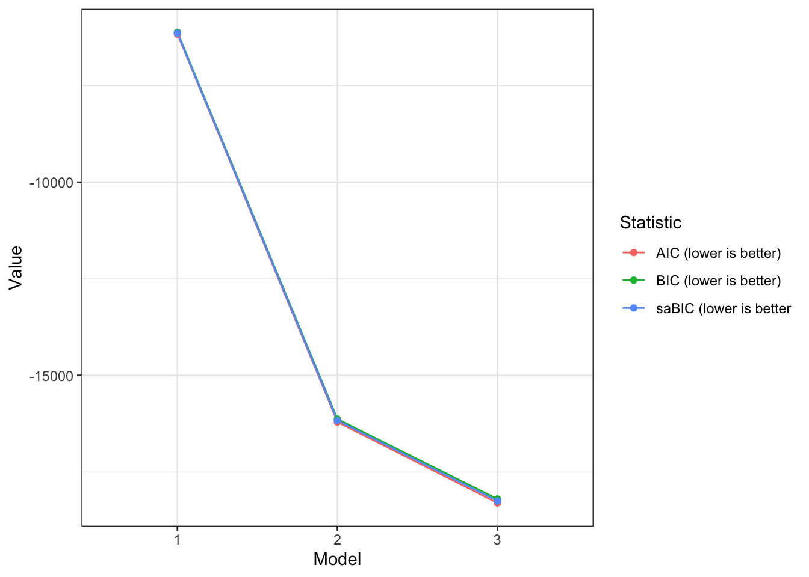
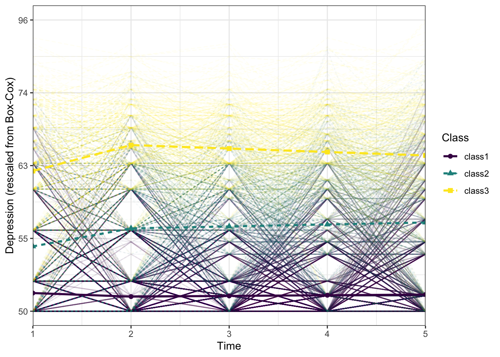

| name | mean | median | sd | min | max | skew_2se | kurt_2se |
|---|---|---|---|---|---|---|---|
| depress.0 | 53.60388 | 50 | 5.730277 | 50 | 89 | 43.25937 | 73.03183 |
| depress.1 | 53.91671 | 51 | 6.091272 | 50 | 89 | 40.55937 | 67.51372 |
| depress.2 | 53.74756 | 51 | 5.879662 | 50 | 89 | 34.89586 | 58.92123 |
| depress.3 | 54.07339 | 51 | 6.202545 | 50 | 91 | 32.14011 | 53.74958 |
| depress.4 | 53.98760 | 51 | 6.389056 | 50 | 96 | 27.29848 | 47.96809 |
Depression Trajectories in the ABCD Study
Abstract
xxxxxxxxx Input abstract here.
1 Introduction
The Adolescent Brain Cognitive Development (ABCD) Study® is the largest longitudinal investigation of neurodevelopment and child health in the United States. Conceived and initiated by the National Institutes of Health (NIH), this landmark prospective longitudinal study aims to transform our understanding of the genetic and environmental factors impacting neurodevelopment and their roles in behavioral and health outcomes across ten years of adolescence Volkow et al. (2018).
“Studies investigating trajectories of depressive symptoms Gao et al. (2021), Kaup et al. (2016), Lin et al. (2023), Zhang et al. (2022). Musliner et al. (2016) Musliner et al. (2016) conducted a systematic review on the heterogeneity in long-term patterns of depressive symptoms and found that most of these studies identified three or four different symptom trajectories and sampled the general population.”
“A valuable tool for investigating heterogeneity in symptom patterns is Latent Growth Curve Modelling (GCM), a statistical method that analyses inter-individual variability in intra-individual patterns over time Curran, Obeidat, and Losardo (2010). One specific type of GCM is Latent Class Growth Analysis (LCGA), which considers unobserved heterogeneity (different groups) over time within a larger population Jung and Wickrama (2008), Nguena Nguefack et al. (2020), Ram and Grimm (2009). In other words, LCGA can examine the growth and shape of the course of depressive symptoms over time and assess how individuals in the population group together based on their symptom patterns.”
“The aim of the present study is to investigate the course of depressive symptoms over a period of xx years …. and to …. . To achieve this goal, LGCM will be performed on data from the xxxx ABCD cohort (add citation). The ABCD study was initiated in xxxxx. Based on previous literature Musliner et al. (2016), we hypothesize that three or four trajectories of depression can be identified. Given that xxxxx, we additionally hypothesize that individuals following more xxxx trajectories will be more/less likely to experience xxxx and exhibit reduced levels of xxxxx”
2 Methods
2.1 Design and participants
Participants were enrolled in the ongoing, longitudinal ABCD Study. The ABCD Study recruited a cohort of n=11,880 participants born between 2006-2008 and aged approximately 9-10 years at baseline, each with a parent/guardian. The study sample was recruited from households in defined catchment areas for each of the 21 (originally 22) study sites across the United States. The present study examines data from the fifth public release of ABCD Study data (version 5.1, released xxxx 202x https://data-archive.nimh.nih.gov/abcd). Institutional review boards at participating universities approved all study procedures. Participants provided written assent, and their legal guardians written consent, for participation. Information regarding funding agencies, recruitment sites, investigators, and project organizations can be obtained at https://abcdstudy.org. The ABCD Study design is described in more detail in Garavan et al. (2018) and Dick et al. (2021).
[baseline (T0) measurement; follow-up measurements (T1) (T2)(T3)(T4)]
2.2 Measures
2.2.1 Depression
Depression was assessed using the Child Behavior Checklist (CBCL), a widely used parent-report questionnaire designed to identify problem behavior in children and adolescents aged 6 to 18 years Achenbach, Ruffle, et al. (2000). The CBCL is comprised of various scales that measure different aspects of emotional and behavioral problems. Specifically, the Depressive Problems scale, which is part of the broader Internalizing Problems domain, was utilized to measure symptoms of depression. This scale includes items that assess a range of depressive symptoms such as persistent sadness, lack of interest in activities, and excessive guilt or feelings of worthlessness. Respondents (parents or primary caregivers) were asked to rate how true each item was for their child over the past six months on a 3-point Likert scale ranging from 0 (not true) to 2 (very true or often true). The scores from the relevant items were summed to create a composite score for depressive symptoms, with higher scores indicating greater severity of depressive symptoms Goldstone et al. (2020). CBCL symptom scores below the 93rd percentile (T = 65) are considered normal, scores between the 93-97th percentile (T = 65–69) are borderline clinical, and any score above the 97th percentile (T = 69) are in the clinical range Maruish (2004). Scores in the borderline range are high enough to be of concern Maruish (2004). The CBCL has demonstrated strong psychometric properties Achenbach, Ruffle, et al. (2000) and its use in assessing depressive symptoms is supported by numerous studies, including those using ABCD Study data Barch et al. (2018), Goldstone et al. (2020), Gorham et al. (2019), Hoffman et al. (2019)
2.2.2 Add other measures
2.2.3 Potential confounders
To account for the potentially confounding effects of attentional, cognitive, or emotional difficulties that are often comorbid with depression, all analyses included CBCL DSM-oriented xxx problems and xxx problems subscale scores as covariates. We also covaried for sex, age, race/ethnicity, and parental education.
2.3 Analytic Plan
2.3.1 Descriptive Statistics
Participants with CBCL depression scores at one or more time point(s) were included in the trajectory analysis. Groups with and without any missing scores on the depression outcome at each time point were compared.
2.3.2 Trajectory Models
Variability in depressive symptom trajectories was examined using latent class growth analysis (LCGA; Jung and Wickrama (2008), Andruff et al. (2009), Berlin, Williams, and Parra (2014), Wardenaar (2020)). LCGA is a person-centered method that identifies latent classes of individuals sharing similar developmental patterns, thereby facilitating an examination of individual patterns of stability and change across time Jung and Wickrama (2008), Nguena Nguefack et al. (2020), Ram and Grimm (2009). Prior research (Musliner et al. (2016)) suggests three to six distinct depressive trajectory subgroups, prompting the estimation of models ranging from one to seven classes. To capture changes in depressive symptomatology over time, both linear and quadratic terms were considered. Differentiation among trajectories regarding intercept, slope, and step was evaluated using Wald tests. An examination of the data revealed a skewed distribution, notably inflated at the scale’s lower end. Initial analyses resulted in LCGA model convergence issues due to this skewness. As such, a Box-Cox transformation was implemented (See Fig. xx) to improve the ability to examine patterns of heterogeneity in more detail. To evaluate the effect of covariates, we adhered to a commonly applied, three-step approach which accounts for classification errors of the model Vermunt (2010). This method estimates an auxiliary model based on latent classification, assigning group-specific BCH weights to cases (Bolck, Croon, and Hagenaars (2004)).
Next, an omnibus likelihood ratio test was examined to test for significant differences in trajectory patterns. For all omnibus likelihood ratio tests the p-values were corrected for multiple comparisons using the false discovery rate. If the omnibus test was still significant after correction, post hoc test results were obtained and likewise subjected to correction for multiple comparisons using the false discovery rate.ll analyses were performed using the programming language R (version 4.2.2, package for trajectory analysis: tidySEM, Van Lissa, Garnier-Villarreal, and Anadria (2023)) (with significance level set at p < .05 (two-tailed)). All R code is made publicly available on GitHub at https://github.com/OpenDevSci/SUNLab.
Identification of the best fitting model was based on a combination of interpretability, parsimony, and theoretical justification Nagin and Odgers (2010), Nguena Nguefack et al. (2020), Ram and Grimm (2009). Key metrics for assessing model fit include Information Criteria (IC) such as the Bayesian Information Criteria (BIC), the sample-size-adjusted BIC (saBIC), and the Akaike Information Criteria (AIC), with a preference for models that register the lowest IC values Nylund, Asparouhov, and Muthén (2007), Nest et al. (2020), Van Lissa, Garnier-Villarreal, and Anadria (2023). In cases of ambiguous and contradictory ICs, evaluation of a scree plot’s inflection point may assist in determining the point beyond which additional classes offer negligible improvement to IC reduction Nylund-Gibson and Choi (2018). Model performance was appraised through a range of indicators including entropy, posterior classification probability (the likelihood of an individual’s correct class assignment), and class size. Solutions yielding distinct classes were prioritized to facilitate clear interpretation. High entropy values signify well-differentiated classes Van Lissa, Garnier-Villarreal, and Anadria (2023), Weller, Bowen, and Faubert (2020); thus, configurations with entropy below .90 were excluded. Moreover, when an individual’s posterior classification probability is distinctly high for one class compared to others, it denotes effective class differentiation by the model Andruff et al. (2009). Criteria set for acceptable solutions included an average posterior classification probability exceeding .90 Weller, Bowen, and Faubert (2020). Additionally, drawing on prior studies, a minimum class size of 50 individuals or 5% of the overall sample was deemed necessary to ensure representativeness Muthén and Muthén (2000), Weller, Bowen, and Faubert (2020), leading to the exclusion of classes not meeting this threshold.
Data processing and analysis were executed using the tidySEM package in R Van Lissa, Garnier-Villarreal, and Anadria (2023), employing [full information maximum likelihood estimation to accommodate standard errors and provide a chi-square statistic robust to non-normality(?)]. Complex sampling and recruitment procedures for the ABCD Study were accounted for using cluster correction (i.e., for sibling pairs) and stratification sampling (i.e. study site) procedures.
2.4 Depression symptoms associations with the GDT & substance use
To get more insights in the trajectories and associated outcomes (e.g., GDT, substance use), we assessed xxxxx between the different classes. We used the same three-step approach with the omnibus likelihood test used for the covariates and the results were also corrected for multiple comparisons. All participants reported xxxx during xxxx.
2.5 Add additional analyses section
3 Results
3.0.1 Descriptive Statistics
Descriptive statistics revealed that the study groups were equivalent on demographic variables, except for lower proportional representation of female and Hispanic children in the xxxx groups (see Table 1). This study included xxx participants (xxx [xx.xx%] women, xxx [xx.xx] men); mean (SD) XXX was xx.xx (x.xx). Table 1 provides other demographic characteristics, including race, family income, parental education attainment for each trajectory pattern. Moreover, there were no significant differences between participants missing any depression measurements and participants with complete depression scores at each time point.
3.0.2 Trajectory Models
We can examine these distributions visually as well:

As this type of skew can result in convergence problems in LCGA, we compared several transformations to reduce skew: The square and cube root, log, inverse, and Box-Cox transformations.
We can plot these transformations:

The Box-Cox transformation (maybe/slightly?) reduced skew the most. Consequently, we proceeded with the Box-Cox transformed scores for analysis.
Model Selection
A complete table of model characteristics and fit statistics of the linear and quadratic models are shown in Supplementary Table S5. A selection of characteristics and fit statistics is presented in Table 2 for the linear models. All quadratic models, except the one-class quadratic model, encountered convergence problems and failed to find a final solution. This suggests that the quadratic models are too complex for our dataset Van Lissa, Garnier-Villarreal, and Anadria (2023). While it is feasible to explore alternative non-linear patterns, the persisting issue lies in the apparent complexity associated with models incorporating many parameters. For the linear models, a reduction in BIC, saBIC and AIC was observed with increasing class number. The reduction in ICs flattened after three classes. In addition, the LoMendell-Rubin (LMR) likelihood ratio test was significant with every additional class and entropy was above.90 for all models. Posterior group probability was acceptable (above.90) up to the four-class model. Therefore, the models with five or more classes were not accepted. For all models with one to four classes, the class size was larger than 5% and consisted of at least 50 individuals. Altogether, most quadratic models did not converge, and both the three- and four-class model performed well and had acceptable classification performance. Therefore, we selected the linear three-class model as the final model.
Depression trajectories
The three classes identified were a xx class with xx participants (xx%), an xx class with xx participants (xx%), and a xx class with xx participants (xx%) (Fig. x). The xxx group showed low levels of depressive symptoms xxxx. The xxx and xxx group showed a significant increase in depressive symptoms. The xxxx group started xxxx, and showed a significant xxxxx. Results of the Wald tests (Supplementary Table S8) showed that the xxxxx scores for depressive symptoms (intercepts) and the increase from xxxx differed significantly between all classes (p < .01). Furthermore, the trajectories differed significantly in slope (p < .01). (See Supplement for pairwise comparisons with Bonferroni correction).
Note that the first model showed convergence problems, throwing the error: The model does not satisfy the first-order optimality conditions to the required accuracy, and no improved point for the merit function could be found during the final linesearch. To address this problem, we performed additional iterations to find a better solution, using OpenMx::mxTryHardWideSearch(). This also illustrates that tidySEM mixture models inherit from OpenMx’s MxModel, and thus, different OpenMx functions can be used to act on models specified via tidySEM.
The fifth model also evidenced convergence problems, but this (as we will see) is because the solution is overfitted.
Class enumeration To determine the correct number of classes, we considered the following criteria:
We do not consider classes with, on average, fewer than 5 participants per parameter in a class due to potential local underidentification Lower values for information criteria (AIC, BIC, saBIC) indicate better fit Significant Lo-Mendell-Rubin LRT test indicates better fit for 𝑘 vs 𝑘−1 classes We do not consider solutions with entropy < .90 because poor class separability compromises interpretability of the results We do not consider solutions with minimum posterior classification probability < .90 because poor class separability compromises interpretability of the results
Name Classes LL Parameters AIC BIC saBIC Entropy
1 1 1 3093.653 8 -6171.307 -6120.101 -6145.522 1.0000000
2 2 2 8114.557 12 -16205.115 -16128.307 -16166.438 0.9391755
3 3 3 9166.613 16 -18301.226 -18198.815 -18249.657 0.9076713
prob_min n_min
1 1.0000000 1.00000000
2 0.9521787 0.20337079
3 0.8918387 0.09775281According to the Table, increasing the number of classes keeps improving model fit according to all ICs.
The first two LMR tests are significant, indicating that a 2- and 3-class solution were a significant improvement over a 1- and 2-class solution, respectively. However, solutions with >3 classes had entropy and minimum posterior classification probability below the pre-specified thresholds. Models with >3 solutions also had fewer than five observations per parameter. This suggests that the preferred model should be selected from 1-3 classes.
Scree plot A scree plot indicates that the largest decrease in ICs occurs from 1-2 classes, and the inflection point for all ICs is at 3 classes. Moreover, the BIC increased after 3 classes. A three-class solution thus appears to be the most parsimonious solution with good fit.

Based on the aforementioned criteria, we selected a 3-class model for further analyses. First, to prevent label switching, we re-order these classes by the value of the intercept i. Then, we report the estimated parameters.
Category lhs est se pval confint
13 Means i 0.06 0.00 0.00 [0.06, 0.07]
14 Means step -0.01 0.00 0.00 [-0.02, -0.01]
15 Means s 0.00 0.00 0.06 [-0.00, 0.00]
16 Variances depressbaseline_year_1_arm_1 0.02 0.00 0.00 [0.02, 0.02]
17 Variances depress1_year_follow_up_y_arm_1 0.02 0.00 0.00 [0.02, 0.02]
18 Variances depress2_year_follow_up_y_arm_1 0.01 0.00 0.00 [0.01, 0.02]
19 Variances depress3_year_follow_up_y_arm_1 0.02 0.00 0.00 [0.02, 0.02]
20 Variances depress4_year_follow_up_y_arm_1 0.03 0.00 0.00 [0.02, 0.03]
33 Means i 0.22 0.01 0.00 [0.21, 0.23]
34 Means step 0.06 0.01 0.00 [0.05, 0.08]
35 Means s 0.01 0.00 0.02 [0.00, 0.01]
36 Variances depressbaseline_year_1_arm_1 0.02 0.00 0.00 [0.02, 0.02]
37 Variances depress1_year_follow_up_y_arm_1 0.02 0.00 0.00 [0.02, 0.02]
38 Variances depress2_year_follow_up_y_arm_1 0.01 0.00 0.00 [0.01, 0.02]
39 Variances depress3_year_follow_up_y_arm_1 0.02 0.00 0.00 [0.02, 0.02]
40 Variances depress4_year_follow_up_y_arm_1 0.03 0.00 0.00 [0.02, 0.03]
53 Means i 0.48 0.01 0.00 [0.46, 0.50]
54 Means step 0.09 0.01 0.00 [0.07, 0.11]
55 Means s -0.01 0.00 0.00 [-0.02, -0.00]
56 Variances depressbaseline_year_1_arm_1 0.02 0.00 0.00 [0.02, 0.02]
57 Variances depress1_year_follow_up_y_arm_1 0.02 0.00 0.00 [0.02, 0.02]
58 Variances depress2_year_follow_up_y_arm_1 0.01 0.00 0.00 [0.01, 0.02]
59 Variances depress3_year_follow_up_y_arm_1 0.02 0.00 0.00 [0.02, 0.02]
60 Variances depress4_year_follow_up_y_arm_1 0.03 0.00 0.00 [0.02, 0.03]
name
13 class1.M[1,6]
14 class1.M[1,7]
15 class1.M[1,8]
16 class1.S[1,1]
17 class1.S[2,2]
18 class1.S[3,3]
19 class1.S[4,4]
20 class1.S[5,5]
33 class2.M[1,6]
34 class2.M[1,7]
35 class2.M[1,8]
36 class2.S[1,1]
37 class2.S[2,2]
38 class2.S[3,3]
39 class2.S[4,4]
40 class2.S[5,5]
53 class3.M[1,6]
54 class3.M[1,7]
55 class3.M[1,8]
56 class3.S[1,1]
57 class3.S[2,2]
58 class3.S[3,3]
59 class3.S[4,4]
60 class3.S[5,5]As evident from these results, Class 1 started at a relatively lower level of depressive symptoms, experienced a decrease after deployment, followed by increase over time. Class 2 started at a moderate level of depressive symptoms, experienced an increase after deployment, followed by significant increase over time from T2-T6. Class 3 started at a relatively higher level, experienced an increase after deployment, followed by stability.
Wald tests To test whether parameters are significantly different between classes, we can use Wald tests. Wald tests can be specified for all parameters in the model, using the hypothesis syntax from the bain package for informative hypothesis testing.
To identify the names of parameters in the model, we can use the name column of the results table above. Alternatively, to see all parameters in the model, run:
[1] "mix3.weights[1,2]" "mix3.weights[1,3]"
[3] "vdepressbaseline_year_1_arm_1" "vdepress1_year_follow_up_y_arm_1"
[5] "vdepress2_year_follow_up_y_arm_1" "vdepress3_year_follow_up_y_arm_1"
[7] "vdepress4_year_follow_up_y_arm_1" "class1.M[1,6]"
[9] "class1.M[1,7]" "class1.M[1,8]"
[11] "class2.M[1,6]" "class2.M[1,7]"
[13] "class2.M[1,8]" "class3.M[1,6]"
[15] "class3.M[1,7]" "class3.M[1,8]" Next, specify equality constrained hypotheses. For example, a hypothesis that states that the mean intercept is equal across groups is specified as follows:
“class1.M[1,7] = class2.M[1,7] & class1.M[1,7] = class3.M[1,7]
It is also possible to consider comparisons between two classes at a time. When conducting many significance tests, consider correcting for multiple comparisons however.
| Hypothesis | df | chisq | p |
|---|---|---|---|
| Mean i | 2 | 2543.57 | 0 |
| Mean step | 2 | 160.65 | 0 |
| Mean slope | 2 | 15.89 | 0 |
All Wald tests are significant, indicating that there are significant differences between the intercepts, step function, and slopes of the three classes.
Trajectory plot Finally, we can plot the growth trajectories. This can help interpret the results better, as well as the residual heterogeneity around class trajectories.
Scale for y is already present.
Adding another scale for y, which will replace the existing scale.Warning: Using shapes for an ordinal variable is not advised
Note that the observed individual trajectories show very high variability within classes.
Covariates
Assessment of covariates using the three-step approach revealed that the trajectories did not differ in any of the demogra phical variables, including sex (ΔLL(5) = 6.3 , p = .27, pcorr = .37), age (ΔLL(8) = 8.4 , p = .40, pcorr = .50), rank Journal of Affective Disorders 354 (2024) 702–711 707(ΔLL(11) = 13.5 , p = .26, pcorr = .37), educational level (ΔLL(9) = 7.1 , p = .63, pcorr = .66), function (ΔLL(8) = 8.1 , p = .43, pcorr = .51), year of deployment (ΔLL(5) = 3.6 , p = .61, pcorr = 66), or previous deployments (ΔLL(6) = 3.0 , p = .81, pcorr = .81). For early life traumas, the symptomatic-chronic group experienced more early life traumas compared to the other trajectories (p < .01, pcorr < .01) and both the resilient and late-onset-increasing group experienced significantly less early life traumas compared to the intermediate-stable group (ΔLL(2) = 21.6 , p < .01, pcorr < .01; ΔLL(2) = 8.1 , p < .05, pcorr < .05) (Supple- mentary Fig. S10). Significant disparities in the number of deployment stressors were observed, with the resilient group exhibiting lower counts of deploy- ment stressors compared to the intermediate-stable group (ΔLL(2) = 23.0 , p < .01, pcorr < .01), symptomic-chronic group (ΔLL(2) = 325.7 , p < .01, pcorr < .01), and late-onset-increasing group (ΔLL(2) = 9.5 , p < .01, pcorr < .05) (Supplementary Fig. S11). A detailed breakdown of percentages per stressor is provided in Supple- mentary Table S12
Depression and GDT
Depression and substance use
3.1 Add additional analyses section
4 Discussion
lorem::ipsum(5, sentences = c(3))Elit felis, libero eleifend augue ultricies habitant eget a. Mollis pulvinar magnis tempus integer mi ultrices – vehicula fusce pellentesque. Iaculis feugiat auctor himenaeos pretium cum quam velit molestie.
Sit platea nisi proin aliquam eros, interdum sociosqu? Bibendum sagittis facilisi maecenas mi et, ornare platea semper ut conubia. Sodales volutpat et curabitur consequat nisl ultrices felis praesent habitasse.
Ipsum venenatis class cubilia aenean torquent lobortis; dis fringilla. Quis rhoncus magna pharetra torquent dui justo sociis aptent. Erat egestas malesuada vivamus vestibulum placerat, faucibus dis magna habitant, in rhoncus varius.
Ipsum sem himenaeos imperdiet euismod tellus commodo suscipit tincidunt aliquet. Tellus enim litora enim gravida magnis enim, orci urna non, fames tempus! Senectus et nisi tincidunt suscipit fringilla praesent nascetur est.
Adipiscing lectus interdum euismod pretium urna nisi habitant condimentum. Parturient ultrices mus eros massa id, netus habitant quis. Urna dis pharetra neque; mollis curae natoque arcu; id a pellentesque, nascetur ac nam arcu faucibus ac!
# lorem::ipsum(2, avg_words_per_sentence = 4)5 Acknowledgements
Data used in the preparation of this article were obtained from the Adolescent Brain Cognitive DevelopmentSM (ABCD) Study (https://abcdstudy.org), held in the NIMH Data Archive (NDA). This is a multisite, longitudinal study designed to recruit more than 10,000 children age 9-10 and follow them over 10 years into early adulthood. The ABCD Study® is supported by the National Institutes of Health and additional federal partners under award numbers U01DA041048, U01DA050989, U01DA051016, U01DA041022, U01DA051018, U01DA051037, U01DA050987, U01DA041174, U01DA041106, U01DA041117, U01DA041028, U01DA041134, U01DA050988, U01DA051039, U01DA041156, U01DA041025, U01DA041120, U01DA051038, U01DA041148, U01DA041093, U01DA041089, U24DA041123, U24DA041147. A full list of supporters is available at https://abcdstudy.org/federal-partners.html. A listing of participating sites and a complete listing of the study investigators can be found at https://abcdstudy.org/consortium_members/. ABCD consortium investigators designed and implemented the study and/or provided data but did not necessarily participate in the analysis or writing of this report. This manuscript reflects the views of the authors and may not reflect the opinions or views of the NIH or ABCD consortium investigators.
The ABCD data repository grows and changes over time. The ABCD data used in this report came from DOI: 10.15154/z563-zd24. DOIs can be found at the following link.
6 References
Achenbach, Thomas M, Thomas M Ruffle, et al. 2000. “The Child Behavior Checklist and Related Forms for Assessing Behavioral/Emotional Problems and Competencies.” Pediatrics in Review 21 (8): 265–71.
Andruff, Heather, Natasha Carraro, Amanda Thompson, Patrick Gaudreau, Benoı̂t Louvet, et al. 2009. “Latent Class Growth Modelling: A Tutorial.” Tutorials in Quantitative Methods for Psychology 5 (1): 11–24.
Barch, Deanna M, Matthew D Albaugh, Shelli Avenevoli, Linda Chang, Duncan B Clark, Meyer D Glantz, James J Hudziak, et al. 2018. “Demographic, Physical and Mental Health Assessments in the Adolescent Brain and Cognitive Development Study: Rationale and Description.” Developmental Cognitive Neuroscience 32: 55–66.
Berlin, Kristoffer S, Natalie A Williams, and Gilbert R Parra. 2014. “An Introduction to Latent Variable Mixture Modeling (Part 1): Overview and Cross-Sectional Latent Class and Latent Profile Analyses.” Journal of Pediatric Psychology 39 (2): 174–87.
Bolck, Annabel, Marcel Croon, and Jacques Hagenaars. 2004. “Estimating Latent Structure Models with Categorical Variables: One-Step Versus Three-Step Estimators.” Political Analysis 12 (1): 3–27.
Curran, Patrick J, Khawla Obeidat, and Diane Losardo. 2010. “Twelve Frequently Asked Questions about Growth Curve Modeling.” Journal of Cognition and Development 11 (2): 121–36.
Dick, Anthony Steven, Daniel A Lopez, Ashley L Watts, Steven Heeringa, Chase Reuter, Hauke Bartsch, Chun Chieh Fan, et al. 2021. “Meaningful Associations in the Adolescent Brain Cognitive Development Study.” NeuroImage 239: 118262.
Gao, Tingting, Zeying Qin, Yueyang Hu, Junsong Fei, Ruilin Cao, Leilei Liang, Chuanen Li, Songli Mei, and Xiangfei Meng. 2021. “Trajectories of Depression and Anxiety in Chinese High School Freshmen: Associations with Internet Addiction.” Journal of Affective Disorders 286: 180–86.
Garavan, H, H Bartsch, K Conway, A Decastro, RZ Goldstein, S Heeringa, T Jernigan, A Potter, W Thompson, and D Zahs. 2018. “Recruiting the ABCD Sample: Design Considerations and Procedures.” Developmental Cognitive Neuroscience 32: 16–22.
Goldstone, Aimée, Harold S Javitz, Stephanie A Claudatos, Daniel J Buysse, Brant P Hasler, Massimiliano de Zambotti, Duncan B Clark, et al. 2020. “Sleep Disturbance Predicts Depression Symptoms in Early Adolescence: Initial Findings from the Adolescent Brain Cognitive Development Study.” Journal of Adolescent Health 66 (5): 567–74.
Gorham, Lisa S, Terry Jernigan, Jim Hudziak, and Deanna M Barch. 2019. “Involvement in Sports, Hippocampal Volume, and Depressive Symptoms in Children.” Biological Psychiatry: Cognitive Neuroscience and Neuroimaging 4 (5): 484–92.
Hoffman, Elizabeth A, Duncan B Clark, Natalia Orendain, James Hudziak, Lindsay M Squeglia, and Gayathri J Dowling. 2019. “Stress Exposures, Neurodevelopment and Health Measures in the ABCD Study.” Neurobiology of Stress 10: 100157.
Jung, Tony, and Kandauda AS Wickrama. 2008. “An Introduction to Latent Class Growth Analysis and Growth Mixture Modeling.” Social and Personality Psychology Compass 2 (1): 302–17.
Kaup, Allison R, Amy L Byers, Cherie Falvey, Eleanor M Simonsick, Suzanne Satterfield, Hilsa N Ayonayon, Stephen F Smagula, Susan M Rubin, and Kristine Yaffe. 2016. “Trajectories of Depressive Symptoms in Older Adults and Risk of Dementia.” JAMA Psychiatry 73 (5): 525–31.
Lin, Shaowu, Yafei Wu, Lingxiao He, and Ya Fang. 2023. “Prediction of Depressive Symptoms Onset and Long-Term Trajectories in Home-Based Older Adults Using Machine Learning Techniques.” Aging & Mental Health 27 (1): 8–17.
Maruish, Mark E. 2004. The Use of Psychological Testing for Treatment Planning and Outcomes Assessment: Volume 3: Instruments for Adults. Routledge.
Musliner, Katherine L, Trine Munk-Olsen, William W Eaton, and Peter P Zandi. 2016. “Heterogeneity in Long-Term Trajectories of Depressive Symptoms: Patterns, Predictors and Outcomes.” Journal of Affective Disorders 192: 199–211.
Muthén, Bengt, and Linda K Muthén. 2000. “Integrating Person-Centered and Variable-Centered Analyses: Growth Mixture Modeling with Latent Trajectory Classes.” Alcoholism: Clinical and Experimental Research 24 (6): 882–91.
Nagin, Daniel S, and Candice L Odgers. 2010. “Group-Based Trajectory Modeling in Clinical Research.” Annual Review of Clinical Psychology 6: 109–38.
Nest, Gavin van der, Valéria Lima Passos, Math JJM Candel, and Gerard JP van Breukelen. 2020. “An Overview of Mixture Modelling for Latent Evolutions in Longitudinal Data: Modelling Approaches, Fit Statistics and Software.” Advances in Life Course Research 43: 100323.
Nguena Nguefack, Hermine Lore, M Gabrielle Pagé, Joel Katz, Manon Choinière, Alain Vanasse, Marc Dorais, Oumar Mallé Samb, and Anaı̈s Lacasse. 2020. “Trajectory Modelling Techniques Useful to Epidemiological Research: A Comparative Narrative Review of Approaches.” Clinical Epidemiology, 1205–22.
Nylund, Karen L, Tihomir Asparouhov, and Bengt O Muthén. 2007. “Deciding on the Number of Classes in Latent Class Analysis and Growth Mixture Modeling: A Monte Carlo Simulation Study.” Structural Equation Modeling: A Multidisciplinary Journal 14 (4): 535–69.
Nylund-Gibson, Karen, and Andrew Young Choi. 2018. “Ten Frequently Asked Questions about Latent Class Analysis.” Translational Issues in Psychological Science 4 (4): 440.
Ram, Nilam, and Kevin J Grimm. 2009. “Methods and Measures: Growth Mixture Modeling: A Method for Identifying Differences in Longitudinal Change Among Unobserved Groups.” International Journal of Behavioral Development 33 (6): 565–76.
Van Lissa, Caspar J, Mauricio Garnier-Villarreal, and Daniel Anadria. 2023. “Recommended Practices in Latent Class Analysis Using the Open-Source r-Package tidySEM.” Structural Equation Modeling: A Multidisciplinary Journal, 1–9.
Vermunt, Jeroen K. 2010. “Latent Class Modeling with Covariates: Two Improved Three-Step Approaches.” Political Analysis 18 (4): 450–69.
Volkow, Nora D, George F Koob, Robert T Croyle, Diana W Bianchi, Joshua A Gordon, Walter J Koroshetz, Eliseo J Pérez-Stable, et al. 2018. “The Conception of the ABCD Study: From Substance Use to a Broad NIH Collaboration.” Developmental Cognitive Neuroscience 32: 4–7.
Wardenaar, Klaas. 2020. “Latent Class Growth Analysis and Growth Mixture Modeling Using r: A Tutorial for Two r-Packages and a Comparison with Mplus.”
Weller, Bridget E, Natasha K Bowen, and Sarah J Faubert. 2020. “Latent Class Analysis: A Guide to Best Practice.” Journal of Black Psychology 46 (4): 287–311.
Zhang, Joyce, Richard Meiser-Stedman, Bobby Jones, Patrick Smith, Tim Dalgleish, Adrian Boyle, Andrea Edwards, et al. 2022. “Trajectory of Post-Traumatic Stress and Depression Among Children and Adolescents Following Single-Incident Trauma.” European Journal of Psychotraumatology 13 (1): 2037906.